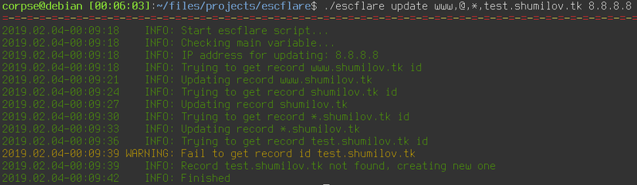
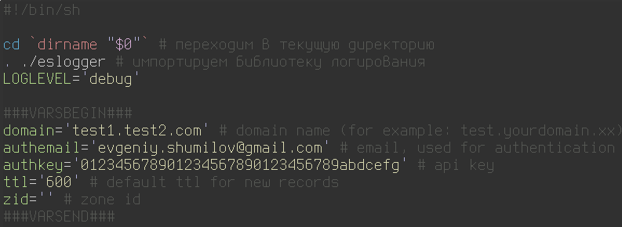
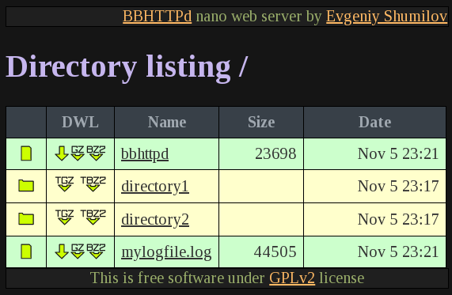

Очистка старых смерженных веток в удалённом git репозитории
Не так давно по работе я столкнулся с задачей - необходимо было очистить большой репозиторий на гитхабе от всех веток, которые были полностью смержены в мастер, позднее, чем N дней. Для этого пришлось написать небольшой скрипт, который я просто оставлю ниже.
Теги: админское, shell, automatization
Скрипт для обновления DNS записей CloudFlare

Пост называется "опять не спится" или "как бесплатно завернуть домен второго уровня на ваш домашний динамический IP адрес". Для чего это вам может быть нужно? Вариантов много. Например, это возможность впоследствии поднять дома какие-нибудь сервисы. Например, создать собственное облако для хранения и расшаривания файлов и смотреть в пути фильмы, лежащие на домашнем жёстком диске или развернуть личный блог, сайт-визитку, сервис умного дома, да хоть устроить станцию онлайн вещания - всё ограничивается вашей фантазией, вариантов использования может найтись масса, когда существует возможность.
Теги: shell, automatization, networking, админское
Упороборос или самоперезаписываемые значения в shell скриптах

Периодически, когда мне нужно написать какой-то скрипт на шелле, я сталкиваюсь с типовыми задачами, которые можно решить быстро, просто и в лоб, а можно написать некоторое количество кода, что займёт больше времени, но при этом позволит использовать эту наработку в будущем. Одним словом, на шелле с этим всё обстоит точно так же, как и в других языках. Хотя наверное сочетание слов "библиотека на шелле" звучит достаточно дико и непривычно. Когда -то я уже писал о библиотеке логирования на шелле, которую я сделал много лет назад и достаточно часто ей пользуюсь, с тех пор не было нужды что-то в ней менять.
Вчера я столкнулся с задачей, для которой целая библиотека на гитхабе - это явный перебор, но метод, который можно включать в различные скрипты мне бы совсем не помешал. И вот чем прекрасен собственный блог - это самое подходящее место для того, чтобы оставить заметочку с небольшим куском кода, который потом при необходимости оттуда можно быстро скопировать. Как это нередко бывает при попытке написать что-то на шелле, сам код оказался куда проще, компактнее и универсальнее, чем изначально казалось, должен был быть.
Теги: shell
Где могут пригодиться графики

Пару месяцев назад я нашёл для себя неожиданно полезное применение графиков в своей работе. И нет, это не мониторинг в классическом понимании этого слова. Это наколенные прогнозы.
Описание задачи
Есть у нас в jenkins одна джоба, которая производит довольно длительную операцию с базой данных. Размер базы около 100Гб, самый долгий этап - обработка таблицы почти в 60 миллионов записей. Иногда этот процесс проходил за 7 часов, иногда за 21 час и я пытался обнаружить причину, по которой получается такая разница во времени обработки данных. Проблема была в том, что понять, насколько быстро выполняется очередная ревизия джобы из километрового лога с цифрами было достаточно сложно. Скрипт раз в 30 секунд выдавал количество обработанных строк и приходилось брать разницу в этом количестве на каком-то временном периоде и затем сравнивать её с аналогичным прошлым, позапрошлым и, возможно, поза-поза-чёрт-знает-сколько-прошлым запуском. Ведь нет смысла ждать и нагружать мощности, если за час работы скрипта можно определить, сколько примерно он будет работать. Но всё оказалось не так просто. Зависимость количества обработанных строк за единицу времени оказалась нелинейной и чтобы понять характер работы, мне понадобился график.
Веб-сервер одним файлом на шелле в 24 килобайта с шахматами и поэтессами

Когда я начинал вести этот блог, у меня было стойкое ощущение, что писать мне будет не о чем, но снова и снова я нахожу какие-то интересные вещи, которыми хотелось бы поделиться. Иногда я нахожу их заброшенными, достаю из бекапов, причёсываю, привожу в более-менее нормальный вид, исправляю какие-то ошибки, пишу документацию, выкладываю на github. Вот так и сейчас. Для тестирования блога мне периодически нужен вебсервер. Вебсервер, который должен выполнять только одну функцию - отдавать браузеру HTML. Можно конечно открыть файл самим браузером из файловой системы, но тогда ломаются ссылки на графику и локальные ресуры вида /images/imagename.png. В качестве вебсервера я обычно запускал python c соответствующим модулем: python -m SimpleHTTPServer. В принципе, этого хватает, но дёргать за хвост целый интерпретатор пайтона ради отдачи HTML - это какой-то overkill. Тогда я и вспомнил, что когда-то написал веб-сервер на шелле. Кто сказал, что нельзя написать веб-сервер на шелле?
Теги: shell, web, minimalism
Дорабатываем bashblog напильником, часть третья - исправляем таймстемпы
Не бывает бочки мёда без пары ложек дёгтя. Если привкус дёгтя вам по вкусу - можно ничего не менять и наслаждаться жизнью, в противном случае требуется какое-то вмешательство. Проблема, которую будем сегодня решать - это даты или таймстемпы, кому как привычнее. Дело в том, что когда работа с bashblog производится на одной машине, то проблем не возникает, но как только мы уносим проект в git и делаем checkout на другой машине, то все даты создания файлов на локальной файловой системе будут совпадать со временем чекаута. Например:
-rw-r--r-- 1 corpse corpse 12K ноя 1 14:17 nemnogo-ob-avtomaticheskoj-generacii-parolej.html
-rw-r--r-- 1 corpse corpse 9,0K ноя 1 14:17 o-detalyax-i-pamyati.html
-rw-r--r-- 1 corpse corpse 15K ноя 1 14:17 okna-v-okne---pro-evolyuciyu-virtualizacii.html
-rw-r--r-- 1 corpse corpse 30K ноя 1 14:17 pro-klaviatury-gryaznye-xaki-i-podgoranie-pyatoj-tochki.html
-rw-r--r-- 1 corpse corpse 13K ноя 1 14:17 pro-lyubov-k-minimalizmu-i-staticheskuyu-generaciyu-kontenta.html
Bashblog устроен таким образом, что он при каждом rebuild или посте переписывает даты и время публикации поста на время создание файла. То есть, вы сделали десяток постов, потом решили добавить ещё один, находясь за другим компьютером, сделали checkout, создали новый пост и все ваши посты получили сегодняшнюю дату и время, когда вы выгрузили содержимое репозитория. Нехорошо. Есть два пути решения этой проблемы - либо вмешаться в содержимое bashblog и изменить его логику работы со временем и датой постов, либо после выгрузки изменять дату и время создания файлов на необходимые. Путь менее очевидный, но я предпочёл его, поскольку не хочу менять код bashblog без особой на то необходимости (чтобы не было мучительно больно после обновления самого bashblog при необходимости).
Сам себе хостинг или о недооценённых утилитах
- Ага-а-а!

О чём вы думаете, когда слышите аббревиатуру FTP? На меня накатывает ностальгия. Сразу вспоминаются всякие уютные ламповые локалочки, сетевые карты rtl8139, серенькие восьмипортовые коммутаторы D-Link в пластиковых корпусах, папки Public и Private, полные варезом - фильмы, музыка, софт, игры... Одним словом, машинка времени в моей голове телепортирует меня куда-то лет на 15 назад. Много воды утекло с тех пор, но когда кто-то просит совета, как построить себе миниатюрный хостинг, часто в числе прочего я в том или ином виде получаю вопрос: "как поднять FTP"? И каждый раз меня это удивляет. А чем sftp не угодил? Да, это медленнее, но во-первых, скорость интернет соединения сейчас уже не та, что была 15 лет тому, во-вторых, у sftp на борту шифрование и в-третьих, sftp практически всегда уже есть там, где присутствует openssh.
Да, sftp, реализованный средствами OpenSSH не лишён ряда недостатков. Хотелось найти некое решение, которое бы позволило быстро и просто реализовать доступ к машине для разных пользователей, для каждого в свою папку, желательно с chroot. Всё заканчивалось длинными ролями на ансибле, которые переписывали конфиги openssh, добавляли пользователей в нужные гргуппы, ставили пакет управления расширенными правами доступа, дёргали всякие setfacl и прочее. И тут меня попросил мой хороший друг (Иван, спасибо тебе!) помочь ему настроить сервер, а пользователям в качестве шелла поставить MySecureShell. Ранее я с таким зверем не сталкивался, да и ни от кого из моих знакомых за те почти 15 лет, что я общаюсь с linux, не слышал. Судя по всему, это не особо популярное решение. Я бы сказал, незаслуженно обойдённое вниманием. Да вы только посмотрите на их логотип! Похоже, это пингвин, прямо поверх которого начали разводить печатную плату (что похоже, сказалось на его настроении), при этом он ещё кому-то угражает двумя логотипами OpenBSD! Интересно, на каких веществах сидел автор? Ладно, этот вопрос оставим наркологам. Лучше посмотрим в конфигурационный файл. Почитав, что там написано, я понял, что эта штука умеет всё, о чём я мечтал и многое из того, о чём я мечтать не смел.
Теги: ssh, shell, sftp, админское
Немного об автоматической генерации паролей
Зачастую возникает необходимость сгенерировать для какой-то цели пароль. Преимущественно это пароль, состоящий из некоторого количества цифр и букв разного регистра.Иногда требуется сгенерировать несколько паролей сразу. Например, для обновления паролей для целой группы пользователей в скрипте или просто хочется выбрать наиболее удобный для набора. Пересмотрев несколько решений, я решил снова ездить на своих велосипедах, так как они имеют минимум зависимостей.
Теги: shell, automatization, админское
В ротейт мне логи! Про минимализм, busybox и логирование.
Так как я довольно много пишу на шелле, передо мной уже довольно давно встала проблема логирования в скриптах. После просмотра километровых логов начинает рябить в глазах, сложно выделить важные моменты при быстром скроллинге, например, какой-нибудь warning или внезапный error. Одним словом, терпение закончилось и я решил написать свой велосипед, по возможности функциональный, лёгкий и с минимумом зависимостей - всё, как я люблю. 
Традиционный список хотелок:
- Минимальные зависимостии размер
- Уровни логирования (debug/info/warinig)
- Отключаемая подсветка разными цветами разных типов событий
- Работоспособность под OpenWRT, Android, Alpine и т.п.
- Возможность переопределять параметры переменными в основном скрипте
- Возможность передать в FATAL сразу код завершения
- Настраиваемый формат даты
- Разделитель (очень полезно для отделения частей лога)
- Краткий синтаксис вызова (не люблю длинные имена модулей)
Теги: logging, shell, busybox, minimalism
Дорабатываем bashblog напильником, часть вторая - подсветка синтаксиса
Думаю, следует сразу предупредить, что я далеко не специалист в html, вёрстке по сетке, css, javascript и прочем кунг-фу из области визуализации веб контента, так что всё, что здесь изложено может оказаться далёким от best practice. Итак, есть задача - получить возможность добавлять в посты блога секции с кодом. Из хотелок - подсветка синтаксиса для разных языков и опциональный скроллбар, если текст не входит в поле по ширине.
Дорабатываем напильником bashblog, часть первая
О том, что мне нужно от блога, я рассказывал в прошлой записи. Теперь небольшая заметка о том, как привести всё это к минимально рабочему виду. Для начала создадим новую директорию, скачаем туда скрипт и выдадим права на запуск.
Теги: bashblog, web, shell, rsync
Про любовь к минимализму и статическую генерацию контента
Для начала я хотел рассказать, как появился этот блог. Когда-то давно, когда мониторы были большими, но не по диагонали, а в толщину, интернет был по талонам картам, а никакого "вконтакте" и "фейсбука" ещё не было, меня, как и многих других моих знакомых, переполняло желание некоего самовыражения. Нужна была какая-то среда, где можно было поделиться плодами маразума с себе подобными, где можно было что-то обсудить, пообщаться, да и просто оставить себе какую-то заметку, к которой неплохо будет вернуться через несколько лет. Сначала я создал страницу на boom.ru (сейчас на этом домене живёт совсем другой сервис). Все эти frontpage, dreamweaver, миллион мельтешащих гифок на чёрном фоне и плохоструктурированный поток сознания кажется были вечность назад. Всё было бы ничего, но странице явно не хватало аудитории. Затем был блог на li.ru - куча "друзей", часть из которых в других городах, кое с кем я даже встретился лично. Попытки написать свою книгу, одобрение со стороны читателей, нехватка времени и мотивации, куча общения. Потом захотелось чего-то "своего". По совету друга (Иван, спасибо тебе) открыл для себя CMS под названием MaxSite. Это был очень интересный, достаточно функциональный комбаин, для которого было достаточное количество плагинов, тем, документации и всего прочего полезного. Фактически это был легковесный аналог WordPress, написанный человеком, делавшим плагины для оптимизации потребления ресурсов WordPress. Всё было настроено, перенесена куча статей из блога с li.ru, но в какой-то момент я перестал обновлять блог до свежей версии, кто-то воспользовался уязвимостью и начал рассылать спам с моего статического айпишника. К тому моменту я уже несколько месяцев ничего не выкладывал и вместо того, чтобы искать баги, просто завернул всё в архив и снёс с инстанса. С тех пор не поднимал ничего, ограничиваясь постами в VK.
ВКонтакте конечно, даёт кучу просмотров и огромную аудиторию, но с какого-то момента снова захотелось чего-то более личного и приватного, чего-то, что будет служить записной книжкой для всякого айтишного и не очень. Подумав, я понял, что это что-то должно отвечать нескольким требованиям:
- компактность и переносимость
- открытый код
- минимум зависимостей
- возможность жить десятилетиями без обновления платформы
- поддержка тегов
- возможность подключения комментариев
- возможность подключения подсветки синтаксиса
Теги: ностальгия, minimalism, web, shell, blog, bashblog